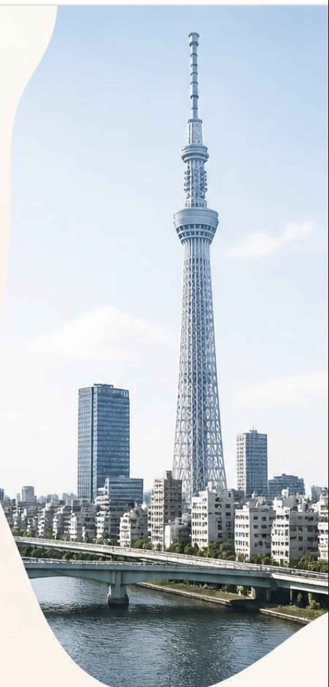

墨田区でシニアが
AIを学ぶなら。
スカイツリーの見えるこの街で、シニア・高齢者のためのAI教室をはじめました。教室に通う必要はありません。私たちがご自宅や集会所へうかがうか、お手元のスマホでオンラインにつなぐか、どちらでも選べます。墨田区にお住まいの方なら、出張の交通費はいただきません。
下町には「聞ける相手」がいてほしい。
墨田区は、町会や商店の付き合いが今も生きている街です。わからないことがあれば近所で聞ける──そういう土地柄なのに、スマホやAIのことだけは「誰に聞いたらいいかわからない」という声をよく耳にします。
お子さんやお孫さんに聞こうにも、遠くに住んでいたり、忙しそうで気が引けたり。かといって家電量販店では、専門用語で説明されて終わってしまう。
その「聞ける相手」になりたくて、この教室をはじめました。だから店舗は持たず、こちらから会いに行く形にしています。
墨田区でシニアがAIを学ぶ方法
まず、当教室以外もふくめて整理します。どれが合うかは、お一人ずつ違います。
家電量販店・携帯ショップ
お使いの機種の操作を教えてくれます。無料や低額のことが多いのが利点です。ただし内容はその端末の使い方が中心で、AIそのものを扱う回は多くありません。
公共施設の講座
区や地域の施設でスマホ講座が開かれることがあります。費用は抑えられますが、日程と定員が決まっているのと、内容が基礎的なものに寄る点は確かめてください。
個別・出張の教室
ご自分のスマホで、ご自分の困りごとを、ご自分のペースで進められます。費用は上の二つより高くなります。すみだAI教室はここに当たります。
先に区の窓口を当たっていただいて構いません。区報や地域の掲示板に、無料のスマホ相談が出ていることがあります。そちらで足りるならそれがいちばんです。
当教室が向いているのは、「何度も同じことを聞き直したい」「自分のスマホの、自分の困りごとを見てほしい」という方です。決まった時間に決まった場所へ通うのが難しい方にも向いています。
墨田区の方はどちらも選べます
ご自宅へ出張
いつも使っているスマホで、いつもの椅子に座ったまま。「この画面が出たら困る」という、ご自宅ならではの困りごとをその場で解決できます。墨田区内は交通費0円、60分4,400円から。
ご自宅からオンライン
出かけずに、お手元のスマホひとつで参加できます。「つながるか不安」という方には、前日にお電話で一緒に練習します。少人数（最大4名）なので質問し放題です。
墨田区は全域にうかがいます
墨田区内（交通費なし）
吾妻橋 ／ 石原 ／ 押上 ／ 京島 ／ 錦糸 ／ 江東橋 ／ 亀沢 ／ 太平 ／ 立花 ／ 立川 ／ 千歳 ／ 堤通 ／ 東駒形 ／ 業平 ／ 墨田 ／ 文花 ／ 本所 ／ 向島 ／ 八広 ／ 東墨田 ／ 東向島 ／ 横網 ／ 横川 ／ 緑 ／ 両国
最寄り駅の例：錦糸町・両国・押上（スカイツリー前）・曳舟・京成曳舟・東向島・鐘ヶ淵・八広・小村井・東あずま・本所吾妻橋・とうきょうスカイツリー
近隣区（要相談）：江東区・台東区・葛飾区・江戸川区
※ オンライン講座は全国どこからでも受講できます。
かかる費用をすべて出します
入会金はありません。教材費もいただきません。墨田区内への出張は、交通費込みの金額です。
| 講座 | 時間 | 料金（税込） |
|---|---|---|
| はじめてスマホ＆AI体験 | 60分 | 500円（初回のみ） |
| ご自宅へ出張（個別） | 60分 | 4,400円（交通費込） |
| 個別相談（オンライン） | 60分 | 3,300円 |
| やさしいAI入門 | 90分 × 全4回 | 9,800円 |
| 月額コース | 90分 × 月4回 | 5,500円 / 月 |
| デジタル安心講座（詐欺対策） | 90分 | 2,000円 |
| 町会・シニアクラブ・施設への出張 | 90分〜 | 応相談 |
※ お支払いは受講当日です。前払いはいただきません。※ 合わなければ体験だけで終えていただいて構いません。勧誘はいたしません。
AIは暮らしの相談相手になります
孫への手紙を書く
「入学祝いの手紙、なんと書こう」。伝えたい気持ちを話すだけで、AIが文章の形にしてくれます。仕上げはご自分の言葉で。
写真を整理する・見せる
撮りっぱなしの写真を探し出したり、家族に送ったり。孫の運動会の写真を見つけるのに、もう10分かけません。
調べものをする
「この薬と一緒に飲んでいい食べ物は」「近所の病院は何時まで」。検索が苦手でも、話しかければ答えが返ります。
詐欺メールを見分ける
怪しいメールやSMSを、その場でAIに見せて確認する方法を学びます。見分け方の記事もどうぞ。
翻訳して読む・話す
観光客の多い街です。英語のメニューや案内も、スマホをかざせば日本語になります。
趣味を深める
俳句の推敲、旅行の計画、家庭菜園の相談。AIは何度聞いても、いやな顔をしません。
申し込みから当日までの流れ
お電話かフォームで
「体験を受けたい」とだけお伝えください。ご希望の日と、ご自宅への出張かオンラインかをうかがいます。ご家族からの代理のお申し込みも承ります。
前日にご連絡します
出張の場合は到着時刻を、オンラインの場合はつなぎ方をお電話で一緒に練習します。ここでつまずく方が多いので、当日ではなく前日にやります。
当日60分
お使いのスマホをそのまま使います。新しく買っていただくものはありません。お支払いは当日、現金でも結構です。
※ 続けるかどうかは、体験のあとでお決めください。その場でお返事いただく必要はありません。
迷いやすいところに先にお答えします
機械が苦手でも大丈夫ですか
大丈夫です。当教室の講座は、ふだんお使いのスマホ1台で受けられるように作ってあります。パソコンもタブレットも要りません。文字を打つのが苦手な方は、声で話しかける方法からお伝えします。
年齢が高くても遅くないですか
AIは、覚えることがいちばん少ない道具です。操作を暗記する必要がなく、困っていることをそのまま話しかければ返事が返ってきます。むしろ、細かい操作を覚えるのが億劫になった方にこそ向いています。
同じことを何度も聞いてしまいそうです
何度でもお聞きください。1回で覚えていただくつもりで作っていません。月額コースがあるのも、忘れた頃にもう一度聞ける場所を用意したかったからです。
高いものを売りつけられませんか
体験のあとに勧誘はいたしません。新しい端末や有料の契約をおすすめすることもありません。料金は上の表に全部出しています。それ以外にかかる費用はありません。
個人情報は大丈夫ですか
講座では、お名前・住所・口座番号などをAIに入れないことを最初にお伝えします。AIの便利さより先に、この線引きをお伝えするのが当教室の方針です。くわしくは AIはなぜ堂々と間違えるのか をご覧ください。
町会・シニアクラブ・施設への出張講座
集会所や施設のお部屋にうかがって、90分ほどの講座を行います。貸出用のタブレットを持参しますので、スマホをお持ちでない方も参加できます。
町会・自治会
回覧やお知らせのデジタル化のご相談も一緒にどうぞ。
シニアクラブ
「詐欺から身を守る」講座が特に喜ばれています。
介護施設・デイサービス
レクリエーションの一環としてもご利用いただけます。
よくある質問
墨田区にシニア向けのAI教室はありますか。
すみだAI教室が、墨田区を拠点にシニア・高齢者向けのAI講座を行っています。店舗は持たず、ご自宅や集会所への出張と、ご自宅で受けられるオンラインの2つの形で運営しています。墨田区内への出張は交通費をいただきません。
墨田区のどこまで来てもらえますか。
区内は全域にうかがいます。押上・錦糸町・両国・曳舟・東向島・八広・京島・立花・文花など、墨田区内であれば交通費はいただきません。近隣の江東区・台東区・葛飾区・江戸川区もご相談ください。
教室に通う必要はありますか。
ありません。すみだAI教室は店舗を持たず、こちらからうかがう出張型と、ご自宅で受けられるオンライン型の2つで運営しています。雨の日も、足の具合が悪い日も、出かけずにすみます。
町会やシニアクラブで開いてもらえますか。
はい。集会所やシニアクラブ、介護施設への出張講座を承っています。人数や内容に応じてご相談ください。貸出タブレットを持参します。
墨田区以外に住んでいますが受けられますか。
オンライン講座は全国どこからでも受けられます。出張は墨田区と近隣区が対象です。
何歳くらいの方が受けていますか。
年齢の制限は設けていません。60代から90代の方を想定して、文字の大きさ、進む速さ、言葉づかいを組み立てています。ご家族といっしょに受けていただくこともできます。
スマホを持っていなくても受けられますか。
町会やシニアクラブへの出張講座では、貸出用のタブレットを持参しますので、お持ちでない方も参加できます。個別の講座については、まずお電話でご相談ください。
離れて暮らす親に受けさせたいのですが。
ご家族からの代理のお申し込みを歓迎しています。オンライン講座は全国どこからでも受けられますので、親御さんが墨田区外にお住まいでも大丈夫です。ご希望があれば、進み具合をご家族へご報告します。
パソコンは持っていませんが大丈夫ですか。
大丈夫です。当教室の講座はすべてスマホ1台で受けられるように作っています。
まずは500円で試してみませんか。
60分のワンコイン体験です。ご自宅へうかがっても、オンラインでも、料金は同じ。合わなければ続けなくて構いません。
お電話でのご相談：080-4885-5430／ 受付 9:00〜23:00